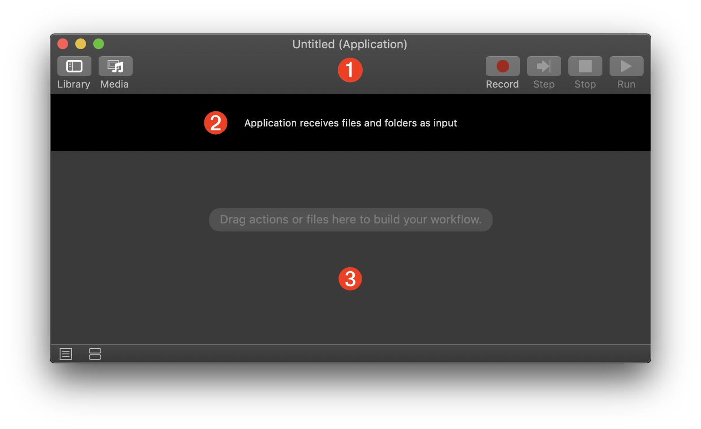
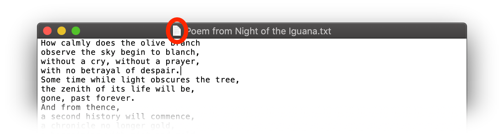
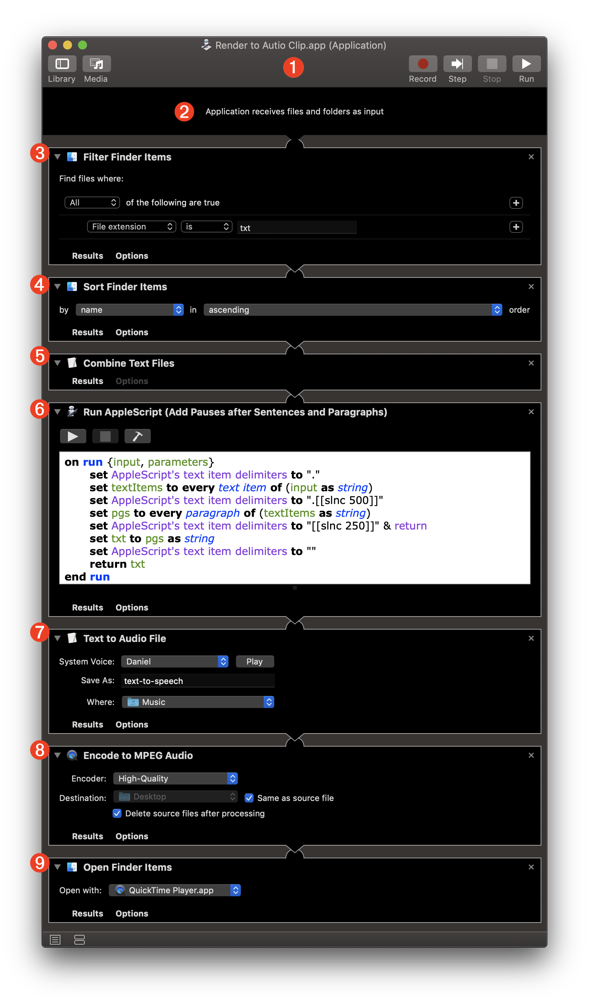
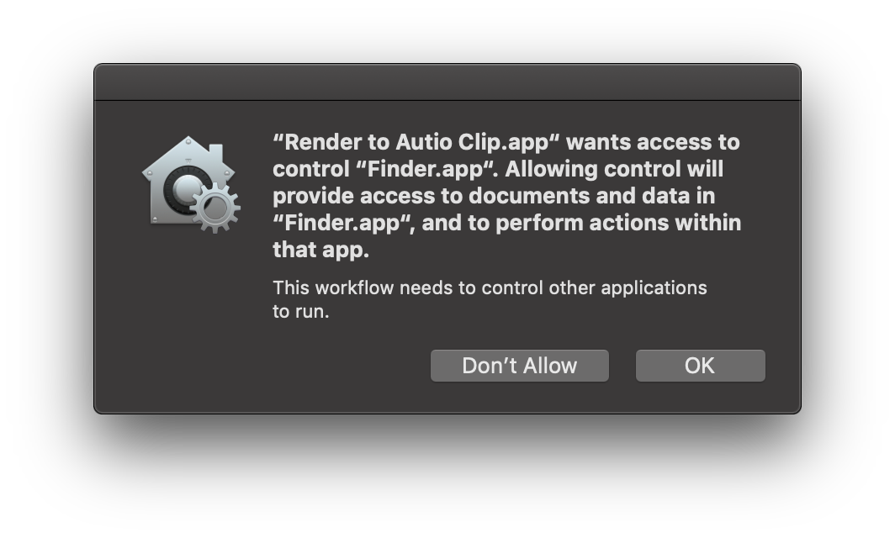
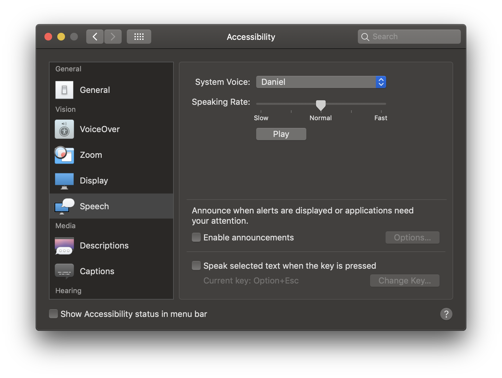

TAP TO HIDE SIDEBAR


Automator: Applications
The Automator workflow applet is a versitile format for delivering portable functionality.
Automator workflows can be saved as stand-alone applets that execute without input, or as droplets that process files and/or folders dragged onto the applet’s icon. This useful format offers portability and the ability to deliver code-signed functionality from Apple developers.
Here is the workflow document window that appears when the Application template is chosen from the Automator template picker dialog:

1 The Automator workflow document window.
2 For some other workflow formats the workflow input settings banner may contain controls for identifying the data type of the workflow input. However, in the case of Automator workflow applets there are no input controls, meaning that input can be nothing, or files and/or folders dragged onto the applet icon.
3 The workflow assembly pane where Automator actions are placed in the order in which they are executed.
Input Strategy
If you are designing a droplet for processing specific types of files, or for processing only folders, beginning the workflow with the Filter Finder Items action is a good method to ensure the user has dragged-on the appropriate content.
Alternatively, you can begin the workflow with the Ask for Finder Items action to have the user choose the input items, or the Get Selected Finder Items action to use the current Finder selection as input, or the Get Specified Finder Items action to work with specific items.
PRO TIP: For extra functionality, place the workflow applet in the Dock and drag the document proxy icon (see below) from an open document onto the applet icon in Dock to process the open document.

Example: Render Text Files to Audio Clip
Here’s an example of an Automator workflow applet/droplet that renders the text from one or more dragged-on text files (.txt) into an audio clip of the combined text spoken using the indicated Text-to-Speech voice installed in the system.
1 An Automator workflow applet document.
2 The input banner for this workflow indicates that can accept files and/or folders as its input.
3 The Filter Finder Items action is set to only pass references to text files (those with the file extension .txt) to the next action in the workflow.
4 The references to the passed text files are sorted alphabetically by name of the file.
5 The Combine Text Files action reads the contents of the passed text files and combines them into a single text string, which is passed to the next action.

6 The Run AppleScript action is added to run an AppleScript script for processing the passed text. The script uses inserted speech commands to add pauses after paragraphs and sentences. The resulting text, with the inserted Speech commands, is passed to the next action.
7 The Text to Audio File action renders the passed text to an audio file, placed into the user’s Music folder, using the chosen installed system voice. A reference to the created audio file (in uncompressed AIFF format) is passed to the next action.
8 The Encode to MPEG Audio action is used to convert the passed AIFF audio file into a smaller MPEG audio file (in ACC format). The original file is deleted, and a reference to the newly created compressed file is passed to the next action.
9 The Open Finder Items actions opens the newly created audio file in the QuickTime Player application.
Here is the AppleScript script for inserting Speech Synthesis commands for pauses into the passed text.
| Humanizing Script (AppleScript) | ||
| 01 | set AppleScript's text item delimiters to "." | |
| 02 | set textItems to every text item of (input as string) | |
| 03 | set AppleScript's text item delimiters to ".[[slnc 500]]" | |
| 04 | set pgs to every paragraph of (textItems as string) | |
| 05 | set AppleScript's text item delimiters to "[[slnc 250]]" & return | |
| 06 | set txt to pgs as string | |
| 07 | set AppleScript's text item delimiters to "" | |
| 08 | return txt | |
Security Dialog
Since the workflow contains an action that executes an Apple Event script (Run AppleScript), the saved applet will require user approval the first time it is run, described in the section on Automation Security.

Example Files
As an example, download a text file containing the following poem and drag it onto the Automator workflow applet.
The poem is from the play/movie “Night of the Iguana” by American playright Tennesse Williams. Note that the original play used an “Orange Branch” rather than the “Olive Branch” which is from the movie version.
(rendered using the Daniel voice)
How calmly does the olive branch
observe the sky begin to blanch,
without a cry, without a prayer,
with no betrayal of despair.
Some time while light obscures the tree,
the zenith of its life will be,
gone, past forever.
And from thence,
a second history will commence,
a chronicle no longer gold,
a bargaining with mist and mold.
And finally the broken stem,
the plummeting to earth, and then,
an intercourse not well designed
for beings of a golden kind,
whose native green must arch above,
the earth’s obscene corrupting love.
And still the ripe fruit and the branch,
observe the sky begin to blanch,
without a cry, without a prayer,
with no betrayal of despair.
Oh courage! Could you not as well,
select a second place to dwell,
not only in that golden tree,
but in the frightened heart of me?
Custom Voices
In macOS, Apple provides dozens of high-quality voices for various languages. The best quality voices, such as the English voice “Daniel” used in this example, can be chosen and downloaded automatically from the “System Voice” popup menu in the Speech category in the Accessibility system preference pane.

This webpage is in the process of being developed. Any content may change and may not be accurate or complete at this time.
DISCLAIMER